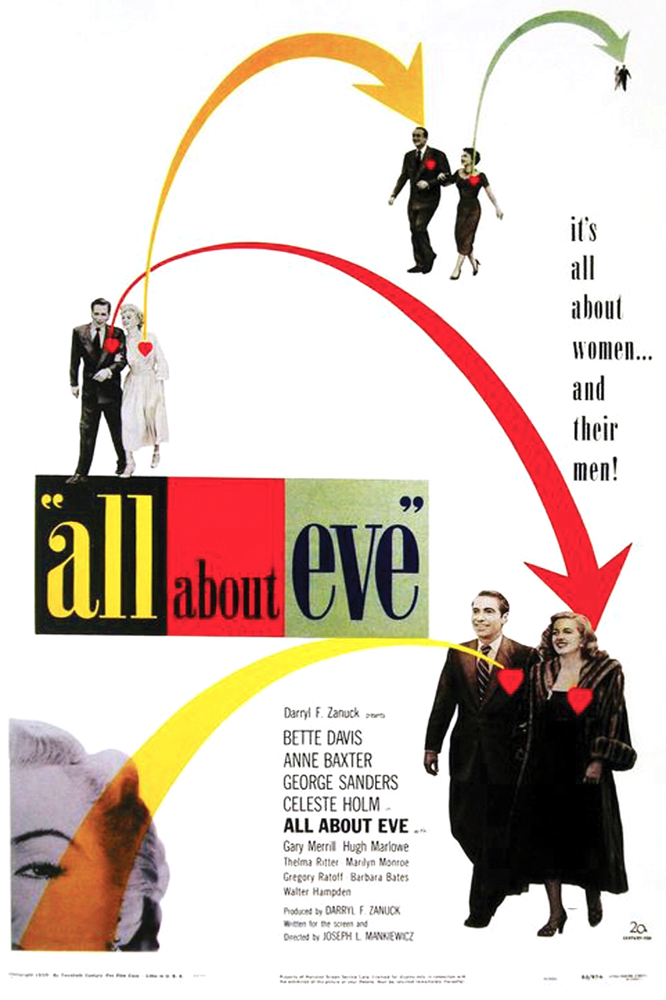

All about Eve
23rd Academy Awards
(Oscars 1951)
14 Nominations, 6 Awards
| Nominations | ||
|---|---|---|
| Category | Nominees | Result |
| Best Motion Picture | 20th Century-Fox | Won |
| Actress | Anne Baxter | Nominated |
| Actress | Bette Davis | Nominated |
| Actor in a Supporting Role | George Sanders | Won |
| Actress in a Supporting Role | Celeste Holm | Nominated |
| Actress in a Supporting Role | Thelma Ritter | Nominated |
| Directing | Joseph L. Mankiewicz | Won |
| Writing (Screenplay) | Joseph L. Mankiewicz | Won |
| Cinematography (Black-and-White) | Milton Krasner | Nominated |
| Film Editing | Barbara McLean | Nominated |
| Art Direction (Black-and-White) | George W. Davis, Lyle Wheeler, Thomas Little, and Walter M. Scott | Nominated |
| Costume Design (Black-and-White) | Charles LeMaire and Edith Head | Won |
| Sound Recording | Thomas T. Moulton | Won |
| Music (Music Score of a Dramatic or Comedy Picture) | Alfred Newman | Nominated |